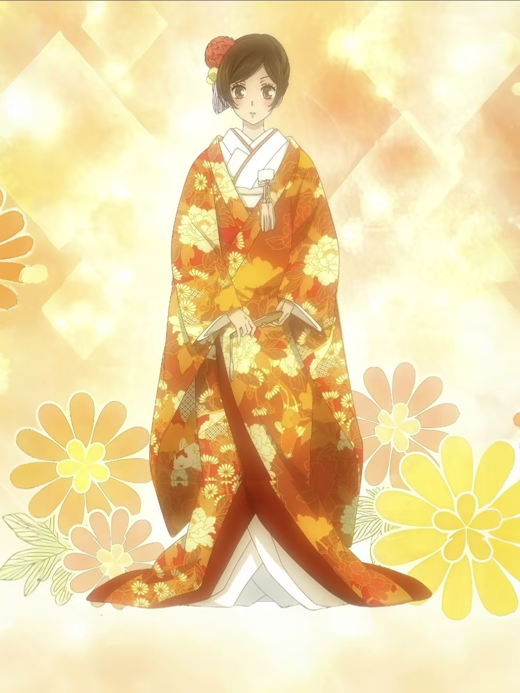
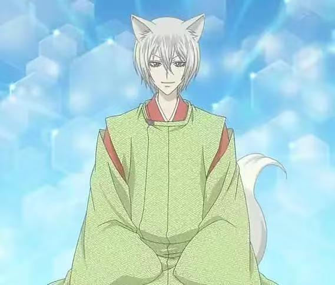
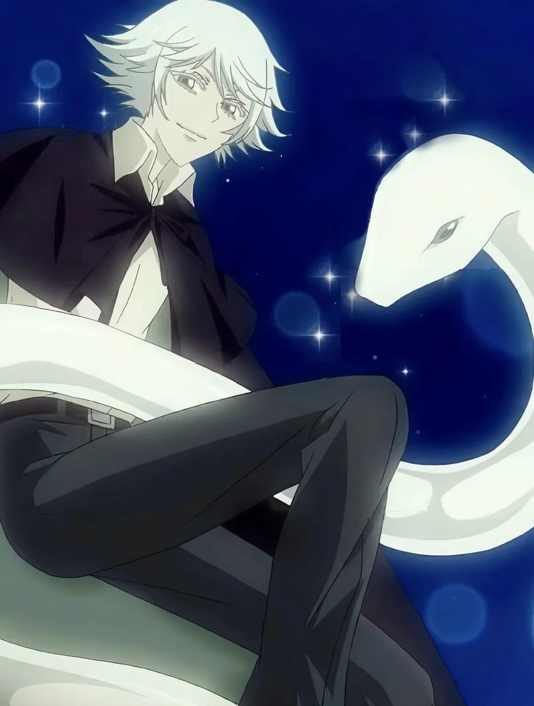
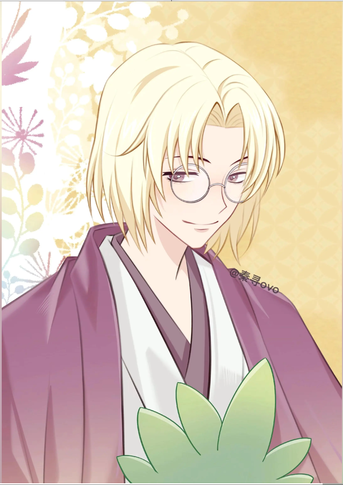
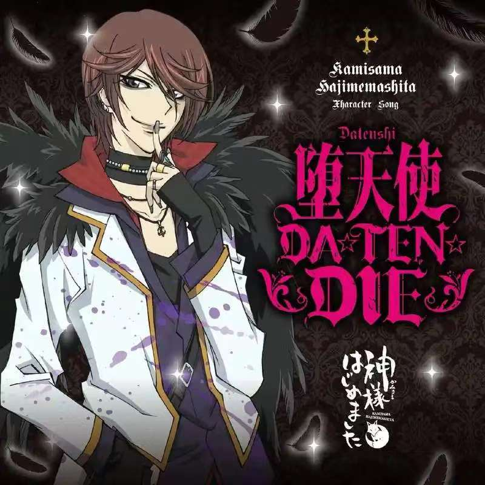
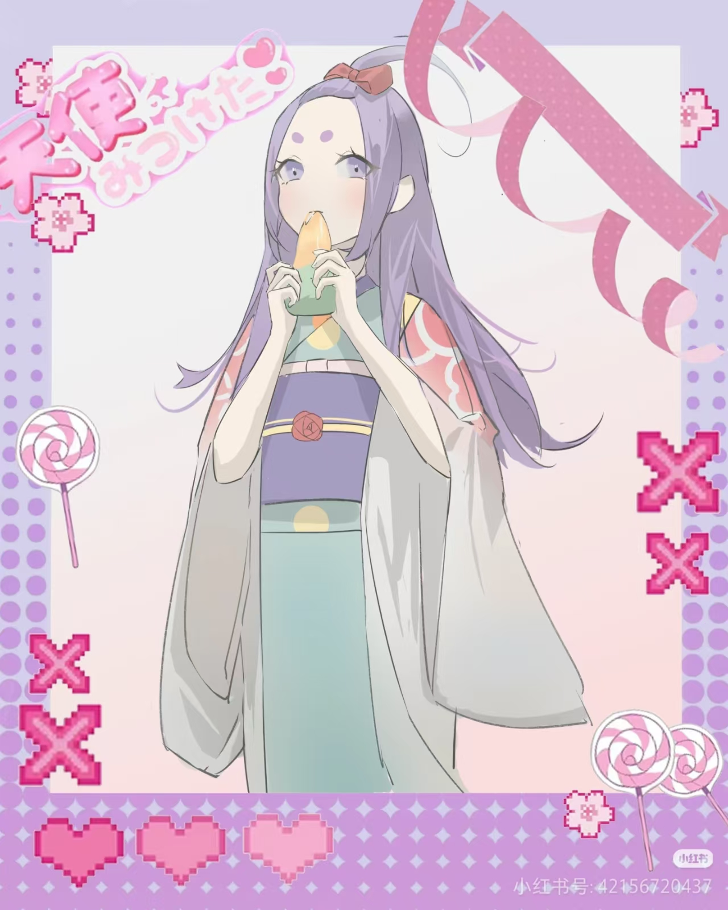
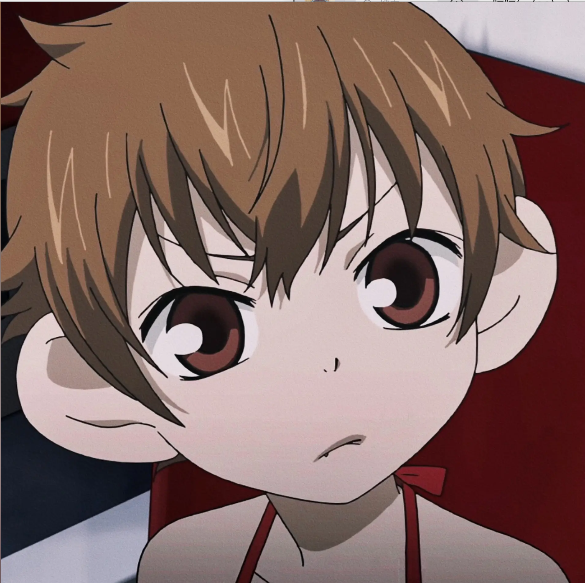
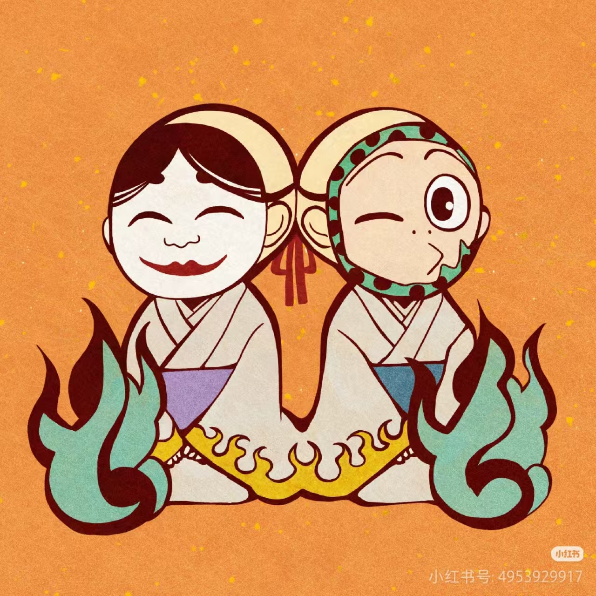

充满魅力的登场人物们

Momozono Nanami / ももぞの ななみ
配音：三森铃子
身份：土地神（人类）
性格：开朗活泼、善良坚强、努力认真
本作女主角。因为父亲欠债而被赶出家门，机缘巧合下成为了御影神社的土地神。 虽然起初对神明的工作一窍不通，但凭借着自己的努力和善良， 逐渐赢得了人们和妖怪们的认可。与巴卫是恋人关系。

Tomoe / ともえ
配音：立花慎之介
身份：神使（狐妖）
性格：傲娇、毒舌、温柔、忠诚
本作男主角。服侍土地神的狐妖神使，外表俊美，能力强大。 曾侍奉御影，在奈奈生成为神后开始侍奉她。 虽然嘴上不饶人，但实际上对奈奈生十分温柔和宠溺。 过去曾是恶名昭彰的妖狐，后被御影收服。

Mizuki / みずき
白蛇神使，原为夜之森的神使。性格有点天然呆， 对奈奈生十分忠诚，将她视为最重要的人。

Mikage / みかげ
前土地神，将神位让给奈奈生的神秘男子。 性格温柔，对巴卫有很深的了解。

Kurama / くらま
天狗，人气偶像歌手。外表冷酷， 实际上是个很有趣的人，与奈奈生是好友。

Himemiko / ひめみこ
沼皇女，湖之主的女儿。温柔可爱， 与奈奈生是好朋友，非常支持奈奈生和巴卫的恋情。

Chibi Mamoru / ちびまもる
奈奈生的式神，是一只可爱的小猴子。 原本是土地神的式神，后被奈奈生收服， 对奈奈生非常忠诚，是神社里的小可爱。

Onikiri & Kotetsu
御影神社的两只小鬼，总是一起行动。 性格活泼，是神社里的开心果。